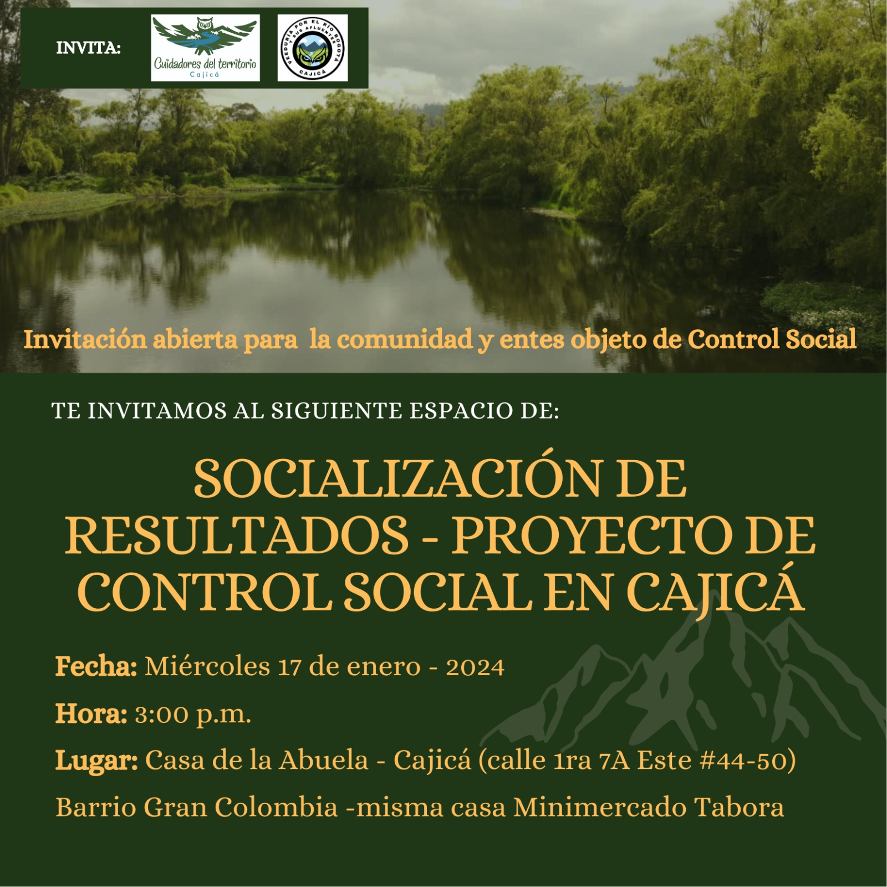

Home
Actividades
Talleres
Visitas
Festival del Rio
Recursos
Quienes somos
Comunidad Cuidadores del Territorio y Veeduría del Río Bogotá – Cajicá.
Tenemos el gusto de invitarles a la socialización de resultados de nuestro proyecto de control social ambiental.

Con el apoyo de #AlertaPorMiAmbiente